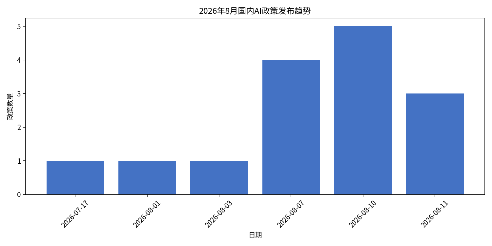
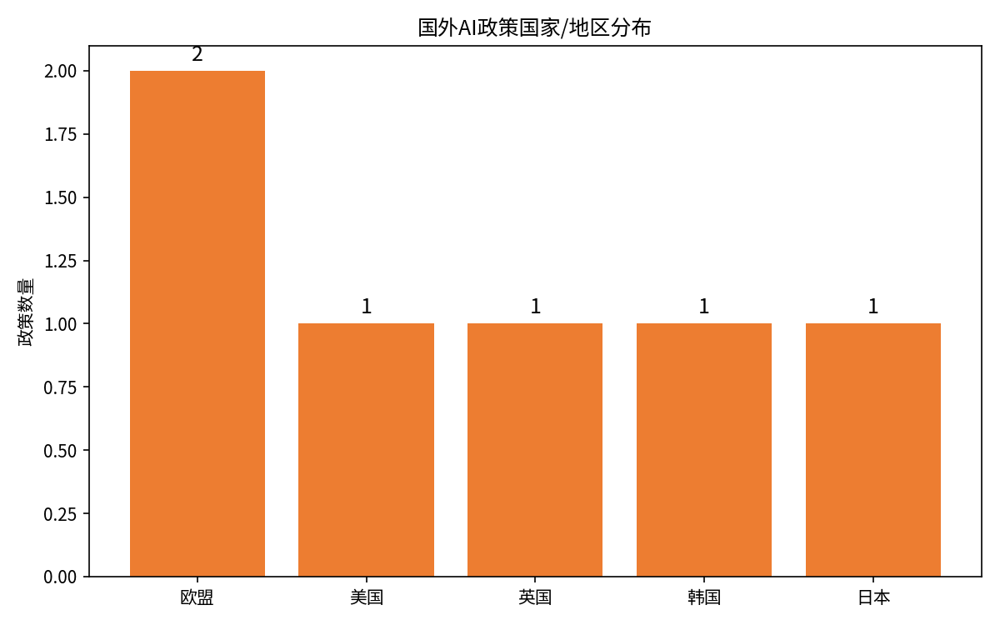
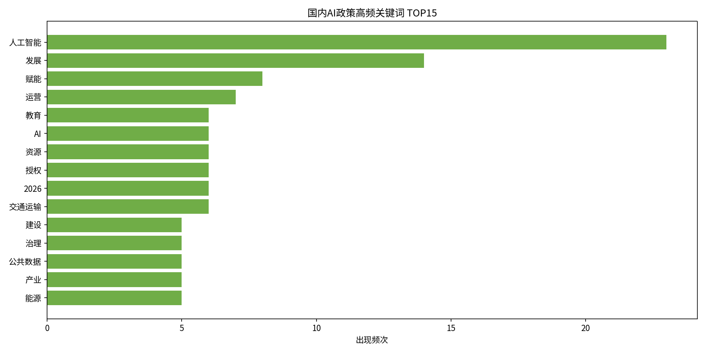
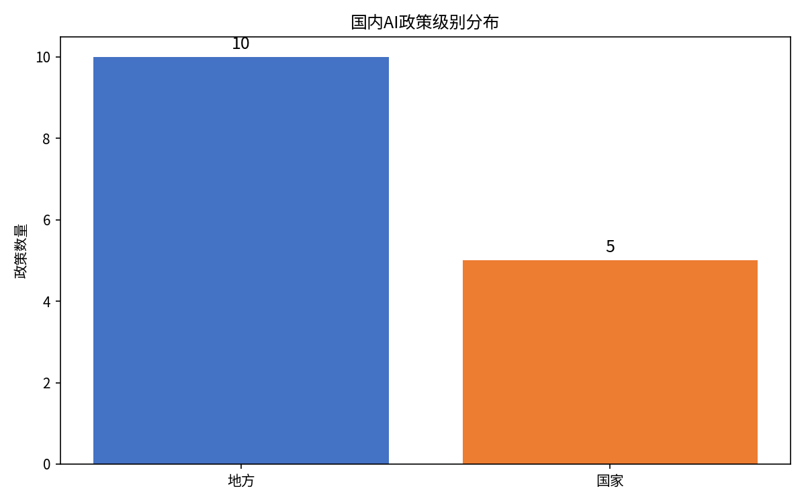

今日国内AI政策发布时间线（近3日）
2026-08-11
黑龙江省推进"人工智能+教育"行动方案
政策级别：地方
发布地区：黑龙江省
发布单位：黑龙江省教育厅
政策类型：教育
根据《教育强国建设规划纲要（2024—2035年）》等战略部署，推进人工智能与教育教学深度融合。
查看原文 →
2026-08-11
上海市进一步推动"AI+制造"发展的若干措施
政策级别：地方
发布地区：上海市
发布单位：上海市经济和信息化委员会
政策类型：制造业
推动关键核心技术攻关，强化工业数据治理，支持开展"模数共振"行动，最高支持2000万元。
查看原文 →
2026-08-11
丽水市公共数据资源授权运营管理实施细则
政策级别：地方
发布地区：浙江省丽水市
发布单位：丽水市大数据发展管理局
政策类型：数据治理
规范公共数据资源授权运营管理，优化授权运营流程，提升数据开发利用水平。
查看原文 →
2026-08-10
东莞市加快建设"人工智能+"城市若干措施
政策级别：地方
发布地区：广东省东莞市
发布单位：东莞市发展改革局（市智办）
政策类型：综合
16条措施涵盖算力底座、数据资源、算法模型、中试基地、终端产业、应用场景、人才引育、安全治理等。
查看原文 →
2026-08-10
东莞市加快建设"人工智能+"城市实施方案（2026—2030年）
政策级别：地方
发布地区：广东省东莞市
发布单位：东莞市政府
政策类型：综合
全面推进技术创新、产业发展、行业应用和要素保障，推动人工智能赋能千行百业。
查看原文 →
2026-08-10
孝感市本级公共数据资源授权运营实施细则（试行）
政策级别：地方
发布地区：湖北省孝感市
发布单位：孝感市政务服务和大数据管理局
政策类型：数据治理
规范开展市本级公共数据资源授权运营工作，遵循依法合规、公平公正、公益优先、合理收益原则。
查看原文 →
2026-08-10
交通运输数据安全管理办法
政策级别：国家
发布地区：全国
发布单位：交通运输部
政策类型：数据安全
规范交通运输数据处理活动，保障数据安全，保护个人、组织合法权益，维护国家安全和公共利益。
查看原文 →
2026-08-10
珠海市人工智能赋能制造业高质量发展行动方案（2026—2028年）
政策级别：地方
发布地区：广东省珠海市
发布单位：珠海市工业和信息化局
政策类型：制造业
深入实施"人工智能+制造"专项行动，推动人工智能创新与制造业应用"双向赋能"。
查看原文 →
本月国内政策详细列表
本月共收录国内AI相关政策 15 项，其中国家级 5 项，地方级 10 项。
今日国外AI政策发布时间线（近两周）
2026-08-02
EU AI Act 全面生效执行
发布国家/地区：欧盟
发布机构：European Commission
政策类型：综合监管
欧盟《人工智能法》多数条款于2026年8月2日起全面适用，激活透明义务、全执法权力、举报人平台及机器可读AI内容标签。
查看原文 →
2026-08-02
欧盟AI Act综合简化一揽子计划
发布国家/地区：欧盟
发布机构：European Commission
政策类型：简化监管
通过"综合简化一揽子计划"中有关AI的部分，将用于招聘、教育、执法和移民管理等高风险系统的部分义务推迟。
查看原文 →
本月国外政策详细列表
本月共收录国外AI相关政策 6 项，覆盖 5 个国家/地区。
| 发布国家 | 美国 |
|---|
| 发布机构 | 白宫/美国总统 |
|---|
| 政策类型 | 安全评估 |
|---|
| 政策摘要 | 要求60天内建立前沿模型机密评测流程，最强闭源模型需自愿送测，开放权重直接放行。 |
|---|
| 详细要求 | 主要盯住达到特定网络能力门槛的美国闭源模型。框架已曝光定稿，要求企业进行安全评估。 |
|---|
| 与前政策区别 | 相比2023年拜登AI行政令，新规更聚焦于前沿模型的安全评测和机密评估流程。 |
|---|
| 数据来源 | https://36kr.com/p/3927933158881417 |
|---|
| 发布国家 | 日本 |
|---|
| 发布机构 | 日本内阁府 |
|---|
| 政策类型 | 促进发展 |
|---|
| 政策摘要 | 日本《人工智能振兴法》于2025年5月获批准，采取原则导向、轻触式监管方式。 |
|---|
| 详细要求 | 与欧盟风险导向模式不同，日本采取鼓励创新、原则导向的轻监管方式，详细指引预计后续出台。 |
|---|
| 与前政策区别 | 此前日本主要通过行业指引和软法治理AI，该法是其首个综合性AI立法。 |
|---|
| 数据来源 | https://aiwiki.ai/wiki/ai_regulation |
|---|
| 发布国家 | 韩国 |
|---|
| 发布机构 | 韩国科学技术信息通信部 |
|---|
| 政策类型 | 综合框架 |
|---|
| 政策摘要 | 韩国《人工智能基本法》于2026年1月22日正式实施，建立全面的AI治理框架和安全研究所。 |
|---|
| 详细要求 | 韩国成为全球首批通过全面AI框架法律的国家之一，采取综合框架法+安全研究所的模式。 |
|---|
| 与前政策区别 | 该法于2024年通过，经过一年过渡期后于2026年1月正式实施。 |
|---|
| 数据来源 | https://aiwiki.ai/wiki/ai_regulation |
|---|
政策发布趋势与分布

国内AI政策发布趋势（按日期）

国外AI政策国家/地区分布
关键词与热频率词分析

国内AI政策高频关键词 TOP15
政策级别与区域分布

国内AI政策级别分布（国家 vs 地方）
热点建设内容与趋势分析
1. 算力基础设施建设成重中之重
本月多个省市（东莞、上海、北京等）密集出台算力相关政策，强调自建算力、智算中心、算力调度平台等。东莞市明确提出自建算力50000P以上，上海市支持租用算力最高补贴4000万元。
2. "人工智能+制造"深度推进
上海、珠海等地发布专项措施推动AI赋能制造业，聚焦工业大模型、工业智能体、工业互联网平台升级等。政策从资金扶持（最高2000万元）到场景建设全方位支持。
3. 具身智能机器人成为新赛道
广州市出台专项政策推动具身智能机器人产业，从技术研发、训练测试、场景培育到金融赋能全链条支持，力争到2029年集聚10家左右整机制造企业。
4. 数据治理与公共数据授权运营提速
丽水、孝感等地出台公共数据资源授权运营细则，交通运输部发布数据安全管理办法，显示数据要素市场化配置和安全治理同步推进。
5. 欧盟AI法全面生效，全球监管进入新阶段
8月2日欧盟AI Act多数条款全面适用，罚款高达全球营业额7%，对全球AI企业产生深远影响。美国同步推进前沿模型安全评测，韩国AI基本法正式实施，全球AI监管格局加速成型。
6. 多部门协同推进AI落地
8月1日发改委、工信部、海关总署、知识产权局、能源局、交通运输部、邮政局等多部门同时发声，显示AI已从单一技术部门事务上升为跨部门国家战略。
关键词标签云
人工智能 (23)
发展 (14)
赋能 (8)
运营 (7)
教育 (6)
AI (6)
资源 (6)
授权 (6)
2026 (6)
交通运输 (6)
建设 (5)
治理 (5)
公共数据 (5)
产业 (5)
能源 (5)
融合 (4)
制造 (4)
若干 (4)
人才 (4)
算力 (4)